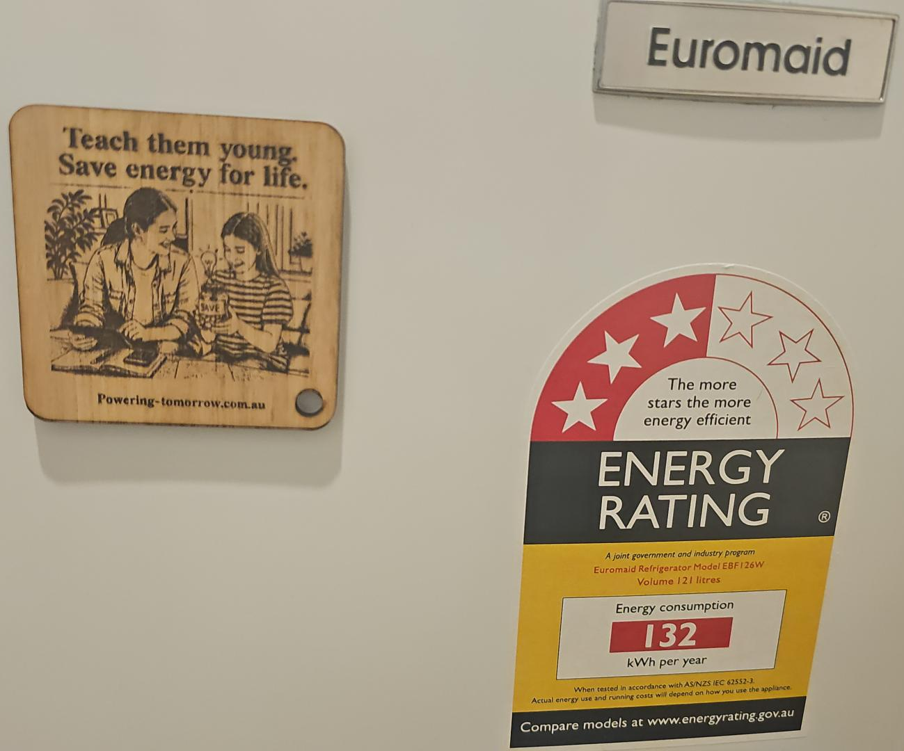
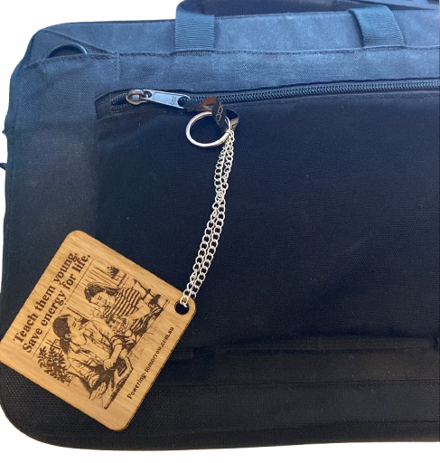
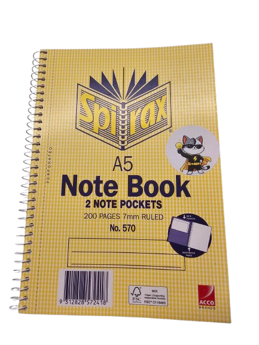
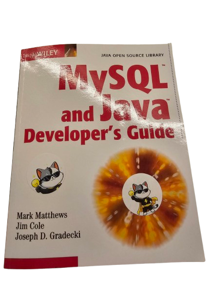

Visible reminders around the home encourage energy-saving choices and lower-bill thinking.
Small Reminders That Travel Home
Take-home artefacts that keep the energy-saving message visible in everyday family life.
Campaign role
Two audiences, one shared habit.
The PSA speaks to families, so the artefacts are split between the people making household decisions and the children building daily routines. Parents get a practical reminder they can keep at home or carry with them, while children get a playful mascot they can place on the items they use every day.
Friendly stickers make switching off lights and devices feel like something they can join in with.
For parents
Keychain and fridge magnet
This artefact places the PSA message where parents already notice it: keys, bags, and the fridge. It works as a quiet prompt to switch off unused power, talk about energy-saving at home, and make small choices that add up over time.


For kids
Captain Wattson stickers
The stickers turn the PSA message into something children can personalise. By placing Captain Wattson on school items, bags, books, and bedroom surfaces, kids get repeated reminders that saving energy is part of their own routine too.


Sticker ideas
Where kids can place them.
Stickers work best when they appear on things children already pick up, open, or look at during the day.
- Water bottle
- Homework folder
- Pencil case
- Laptop or iPad case
- Skateboard or scooter helmet
- Bike helmet
- Toy storage box
- Bedroom door or wardrobe
Together
The message follows the family.
The parent artefact keeps energy-saving visible in shared household spaces, while the stickers invite children to take part through familiar school and personal items. Together, they support the PSA's goal of reducing wasted energy, lowering household costs, and building habits that last across generations.